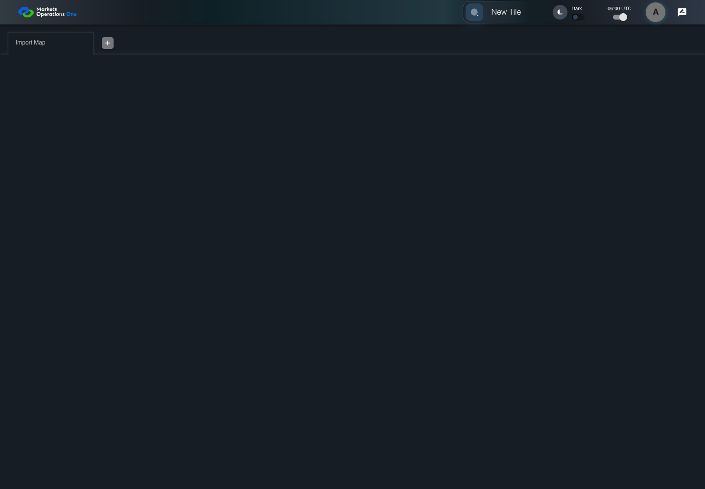
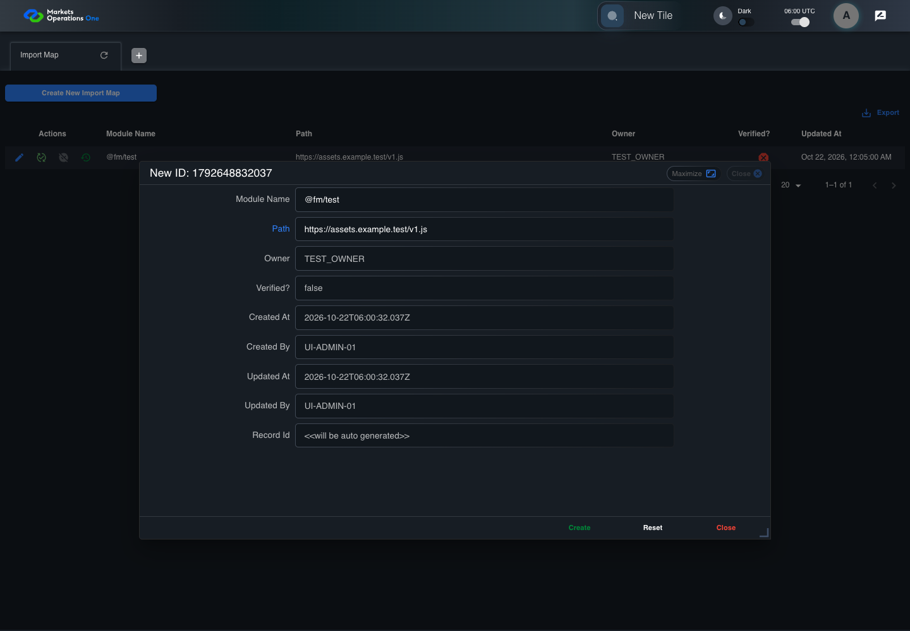

UI-ADM-FLD-005 actual administration UI with step evidence
PASS · application/run-050/ui-adm-fld-005-actual-administration-ui-with-step-evidence-3df5c3453fc4-attempt-1 · ACTUAL_APPLICATION_LOCAL_SERVICES
Actual current React administration screens. Controlled browser login supplies UI-ADMIN-01 and TEST_OWNER, or the declared SUPER_USER. Controlled BFF routes return the case-declared records. Other controlled saves persist submitted field values. This run establishes frontend handling only. It does not execute BFF validation, storage, audit generation, or authorization.
2026-10-22T06:00:29.267Z to 2026-10-22T06:00:33.781Z
Assertions and result · Artifact manifest · Exact run inputs and source hashes
Result SHA-256:3a96ba13dafec21a1b495ba4917cbe8872fe02d7e1a27eddf680e56388398ecaMachine observations
- ui-origin-admin-requests.json
1ad3b1eb43b50cbc72caad64a18a1bf28fc971747d5f3d9795581f2f90fce9ec
Screenshot capture: CAPTURED. Named frames: 8.
Step screenshot evidence: COMPLETE. 7/7 canonical steps have execution screenshots.
Canonical step timeline
Given Admin A is authenticated as fixture UI-ADMIN-01 with the case-specific permissions
Execution: PASSED.
1. step-01 Visible state after step 1: Given Admin A is authenticated as fixture UI-ADMIN-01 with the case-specific permissions
2026-10-22T06:00:31.144Z · 1440×1000
Step: /Users/lushevol/code/github/ratan-release-impact/workbench/tasks/ui-test-coverage-20261022/test-cases.md:9227
SHA-256:23b03dd0c9c3569b10c52c5917f647876f901732be9268cee860dbacf1935c9eAnd UI-ADMIN-01 has a new Import Map form with Module Name @fm/test and Path https://assets.example.test/v1.js; create returns an empty data object {}
Execution: PASSED.2. step-02 Visible state after step 2: And UI-ADMIN-01 has a new Import Map form with Module Name @fm/test and Path https://assets.example.test/v1.js; create returns an empty data object {}
2026-10-22T06:00:32.362Z · 1440×1000
Step: /Users/lushevol/code/github/ratan-release-impact/workbench/tasks/ui-test-coverage-20261022/test-cases.md:9228
SHA-256:1eddafb9c9844e2cb616949199a54759eb11e411a089f4058269bb54dfb63e9bWhen the declared controlled field clock advances by 300 milliseconds
Execution: PASSED.
3. step-03 Visible state after step 3: When the declared controlled field clock advances by 300 milliseconds
2026-10-22T06:00:32.453Z · 1440×1000
Step: /Users/lushevol/code/github/ratan-release-impact/workbench/tasks/ui-test-coverage-20261022/test-cases.md:9229
SHA-256:d5f21ed2140a12f804c651993a209491146cf73e9959d3ff7368c6d1ea066c6bAnd Admin A clicks button named "Create" inside the new-record dialog inside the "Import Map" administration tabpanel
Execution: PASSED.4. step-04 Visible state after step 4: And Admin A clicks button named "Create" inside the new-record dialog inside the "Import Map" administration tabpanel
2026-10-22T06:00:32.692Z · 1440×1000
Step: /Users/lushevol/code/github/ratan-release-impact/workbench/tasks/ui-test-coverage-20261022/test-cases.md:9230
SHA-256:8761e8d9570e27b3d38663bdf2155da9e217c7d48c7da19f7f063261149c8fa0Then dialog with source identity "new ID: <captured fixture timestamp>" inside the "Import Map" administration tabpanel is visible
Execution: PASSED.
5. step-05 Visible state after step 5: Then dialog with source identity "new ID: <captured fixture timestamp>" inside the "Import Map" administration tabpanel is visible
2026-10-22T06:00:32.777Z · 1440×1000
Step: /Users/lushevol/code/github/ratan-release-impact/workbench/tasks/ui-test-coverage-20261022/test-cases.md:9231
SHA-256:e7b7af3641f583a7995c2a3c90b88373ffd26c1ed8fd727f60a27ecedf7f28c4And the data row count in data grid with source identity "administration records" inside the "Import Map" administration tabpanel equals its recorded pre-action count
Execution: PASSED.6. step-06 Visible state after step 6: And the data row count in data grid with source identity "administration records" inside the "Import Map" administration tabpanel equals its recorded pre-action count
2026-10-22T06:00:32.849Z · 1440×1000
Step: /Users/lushevol/code/github/ratan-release-impact/workbench/tasks/ui-test-coverage-20261022/test-cases.md:9232
SHA-256:e7b7af3641f583a7995c2a3c90b88373ffd26c1ed8fd727f60a27ecedf7f28c4And no new row for the declared fixture import map exists in data grid with source identity "administration records" inside the "Import Map" administration tabpanel
Execution: PASSED.
7. step-07 Visible state after step 7: And no new row for the declared fixture import map exists in data grid with source identity "administration records" inside the "Import Map" administration tabpanel
2026-10-22T06:00:32.917Z · 1440×1000
Step: /Users/lushevol/code/github/ratan-release-impact/workbench/tasks/ui-test-coverage-20261022/test-cases.md:9233
SHA-256:80b0110d022bfc017d305e6228c0bd60dd0668f1cd9a871ef4fc271f633c4d2d
Additional named frames
Screenshots establish visible state only. Assertions and traces support functional claims.